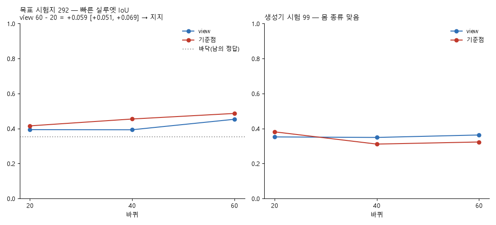

실험 m2_tr0289_h040_덜배움
목표 G1.2 view 모음 → 파츠별 CAD code(CadQuery · 그 전 「3 면도 → 파츠별 CAD」 · 지금 M2 는 위 · 앞 · 옆 고정 세 장만 받음 → 아무 각도 N 장으로 바꿀 것 · 11-20) · G1 첫 제품 — 피규어 · 메카 사진 여러 장 + 치수 → 숨은선 3 면도 + 파츠별 CAD · G0 임의의 이미지 → CAD 코드 · 빌린 가정 4: 정사영 · 시점앎 · 흰바탕 · 렌더화풍 · 갚는 계획: 진단 · 목표 시험지 292 렌더 · 시점 앎 — 다음 실물 사진 · 각도 추정 · 목표 시험지 값: 안 잼 (!)
바탕 m2 를 20 · 40 · 60 바퀴 무게로 목표 시험지 view 길에 넣으면, 바퀴가 늘수록 목표판 모양이 오르나(덜 배움인가)?
판정 · m2-H40 지지(view 60 − 20 +0.059 [+0.051, +0.069]) — 바탕 m2 는 덜 배웠다 · 더 배운 무게일수록 목표판 모양이 오름(view 0.394 → 0.453 · 기준점 0.415 → 0.486) · 다만 view 는 40 바퀴가 평평(한 학습 안 흔들림) · 60 너머는 모름 · 기준점이 view 보다 +0.033 · 다음: 어휘 천장(m2-H42)으로 더 배워 오를 수 있는 끝을 재고 · 제대로 학습(기준점 · 검증 멈춤 · 씨앗 둘)
| 가설 | 주장 | 결과 | 근거 |
|---|---|---|---|
| m2-H40 | 바탕 m2 가 목표 시험지에서 막히는 것은 덜 배운 탓이다 — 같은 학습을 더 하면 목표판 모양이 오른다 | 지지 | 목표판 빠른 IoU 평균(가운데) view 20 0.394(0.401) · 40 0.393(0.384) · 60 0.453(0.453) — 20 → 40 평평 · 40 → 60 에서 오름 · 기준점 20 0.415 · 40 0.454 · 60 0.486(0.505) 고르게 오름 · 기준점 60 − view 60 +0.033 [0.024, 0.043](H15 미리 보기 · 판정 아님) · 생성기 시험 99 종류 맞음 view 0.352 · 0.349 · 0.363 · 기준점 0.381 · 0.311 · 0.323 · 기준점 몸 자리 L2 0.229 · 0.230 · 0.234 · 바닥 0.352 · 자 검사 ρ 0.993 |
분석
한 줄로
물음: 바탕 m2 를 같은 학습의 20 · 40 · 60 바퀴 무게로 목표 시험지 view 길에 넣으면, 바퀴가 늘수록 목표판 모양이 오르나?
답: 오른다 — 지지. 20 바퀴 0.394 → 60 바퀴 0.453(+0.059 [+0.051, +0.069])이다. 바탕 m2 는 덜 배운 시제품이다. 다만 40 바퀴는 20 바퀴와 같아서, 한 번 돌린 학습의 저장 무게 사이 흔들림이 섞여 있다.
왜 이 실험을 했나
tr288 에서 목표 시험지 view 길의 끝에서 끝 잃음은 전부 m2 몫(0.55)이었다. m2 는 11-20 저녁 비교 실험의 한 팔로 60 바퀴만 배운 뒤 무게가 안 바뀌었다. m2 가 막히는 까닭 후보 넷(덜 배움 · 처음 보는 선 · 어휘 · 생성기 밖) 중 가장 싼 「덜 배움」부터 갈랐다. 이미 저장된 무게로 바로 잴 수 있다.
바꾼 것 하나
m2 무게만 바꿨다. 같은 학습(tr263 view 갈래)의 20 · 40 · 60 바퀴 저장 무게다. 입력은 tr288 의 m1 view 선과 렌더 각도다. 자는 「빠른 실루엣 IoU」 — m2 칸을 바로 3면도 실루엣으로 그려 정답 3면도와 견준다. CAD 짓기(292 에 1 시간 반) 대신 쓰려고 돌리기 전에 자 검사를 했다. tr288 같은 출력에서 CAD 기반 IoU 와 순서가 같았고(ρ 0.99), 모델을 섞은 음성 대조는 ρ 0 근처였다. 카드는 숫자를 보기 전에 커밋했다(7734c175).
결과

| 목표 시험지 292 | 20 바퀴 | 40 바퀴 | 60 바퀴 | 판정 |
|---|---|---|---|---|
| view(바탕) | 0.394 | 0.393 | 0.453 | 60 − 20 +0.059 [+0.051, +0.069] · 지지 |
| 기준점(같이 · H15 미리 보기) | 0.415 | 0.454 | 0.486 | 기준점 60 − view 60 +0.033 [+0.024, +0.043] |
바닥(아무 다른 모델의 정답 실루엣)은 0.352 다.
왜 이렇게 나왔나
확인한 것
- 더 배운 무게일수록 목표판 모양이 오른다. view +0.06, 기준점 +0.07 이다.
- 기준점 망은 모든 바퀴에서 view 망보다 높고 고르게 오른다.
- 생성기 시험 99 의 몸 종류 맞음은 바퀴 따라 평평하다(view 0.35 · 0.35 · 0.36).
짐작 (아직 확인 안 함)
- view 가 20 → 40 에서 평평한 것은 한 학습 · 씨앗 하나의 저장 무게 사이 흔들림일 것이다.
- 목표판이 오르는 것은 몸 종류보다 자리 · 크기가 나아져서일 것이다(종류 맞음은 평평).
한계
- 한 학습 안의 바퀴 비교다. 학습률은 일정했고 검증으로 멈추지 않았다. 60 바퀴 너머는 모른다.
- 빠른 자는 특징 · 필렛 · 숨은 모양을 안 그린다(자 검사 ρ 0.99 로 거친 모양 순서는 같음).
- 입력은 렌더 · 시점 앎이다.
배운 것과 다음
바탕 m2 는 덜 배운 시제품이다 — 더 배우면 목표판이 오르고, 기준점 구조가 더 낫다.
- 어휘 천장(m2-H42): 7 종류 × 6 몸을 실제 물체에 가장 잘 맞추면 어디까지 가나 — 더 배워서 오를 수 있는 끝을 먼저 잰다.
- 제대로 학습: 기준점을 켜고 검증으로 멈출 때까지 · 씨앗 둘 — 바탕 장부 적용 대기 H15.
- 처음 보는 선(m2-H41) · 실제 데이터(m2-H43)는 그 뒤.
실험 기록
- 카드(결과 전 커밋 7734c175 · m2-H40_A_Ca · 입력꼴 칸) · 덜배움289.py(자검사 · 흐름 · 재기 · 그림) · 잼.json · 흐름.png · 결과.png · 원본 out/설명/캐드부품/모델289(자검사.json · 셈.npz)
- 가설 번호를 모델마다 따로 · 늘 모델을 붙여 씀(m2-H40) · Lean 이름은 tr0289.m2_H40(가설식.이름 이 - 를 _ 로).
- 결과 그림은 판정 뒤 두 칸으로 줄임(view 쪽 생성기 몸 자리 L2 값이 없어 그 칸을 뺌) — 결론그림 자를 곳 폭 1100 으로 고침.